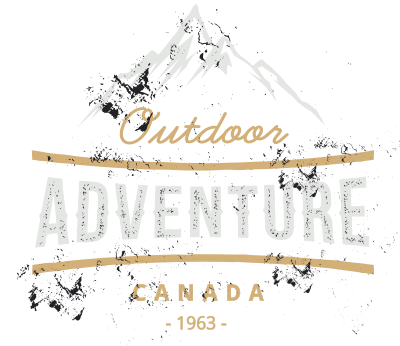
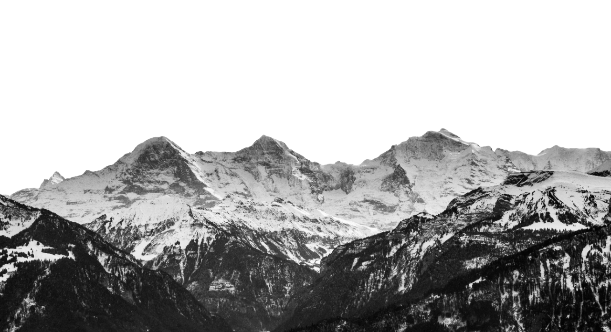

Эксперты по горным путешествиям
Ваше горное путешествие
Всё, что Вам нужно знать
Да, мы готовим экспертов по горным путешествиям.
Что это значит?
Наша команда, которая состоит из заядлых лыжников и сноубордистов(около 70 профессионалов), которые живут и дышат горной культурой, и мы отправляем их по всему миру, чтобы познакомить с лучшими горнолыжными курортами из первых рук.

Италия, территория пиков и вершин
При всем своем территориальном разнообразии Италия может похвастаться большим количеством красивых и запоминающихся горных мест, идеально подходящих для посещения в любое время года, будь то лето или зима. С севера на юг - горный пейзаж Италии
предлагает туристам разнообразные пейзажи: озера на большой высоте, невероятные леса, очаровательные деревушки и борго, богатые историей, традициями и, конечно же, гастрономическими удовольствиями.